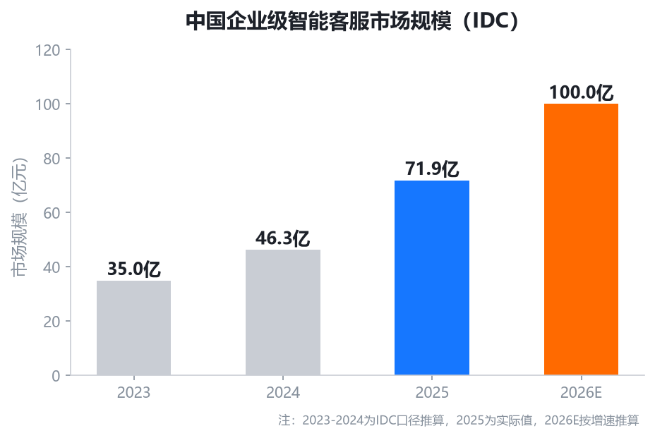
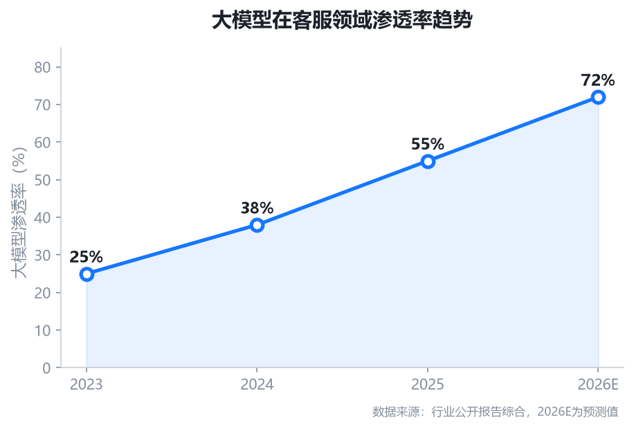
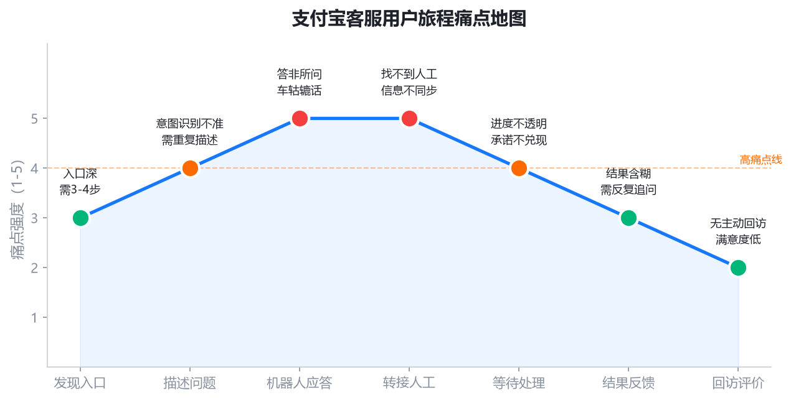
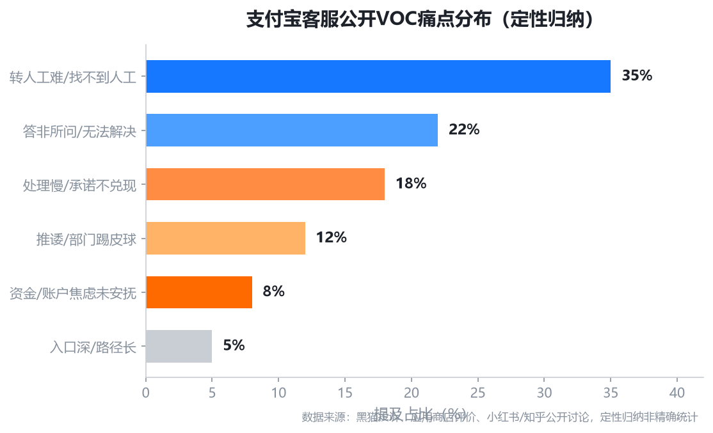
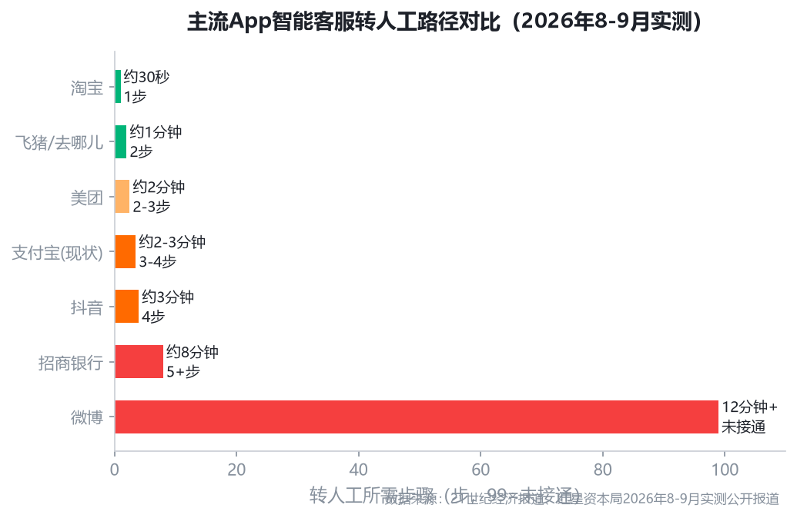
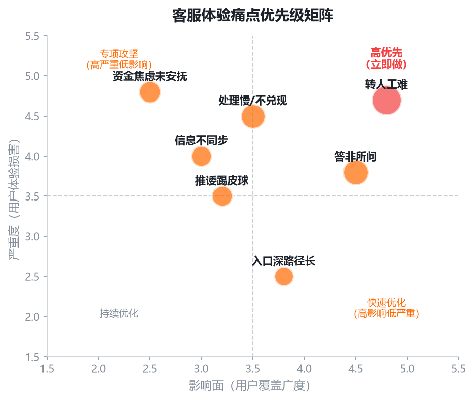
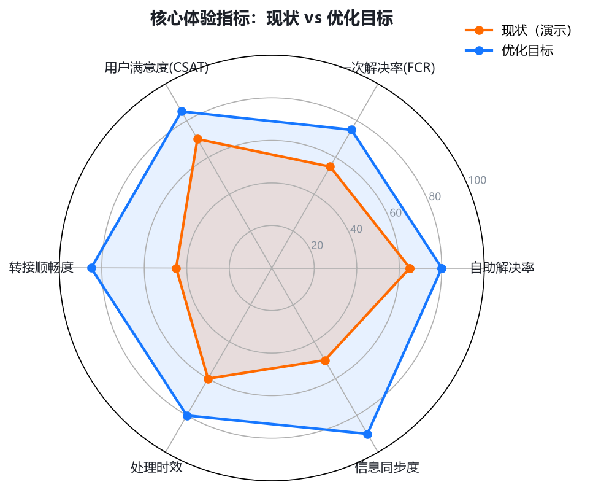
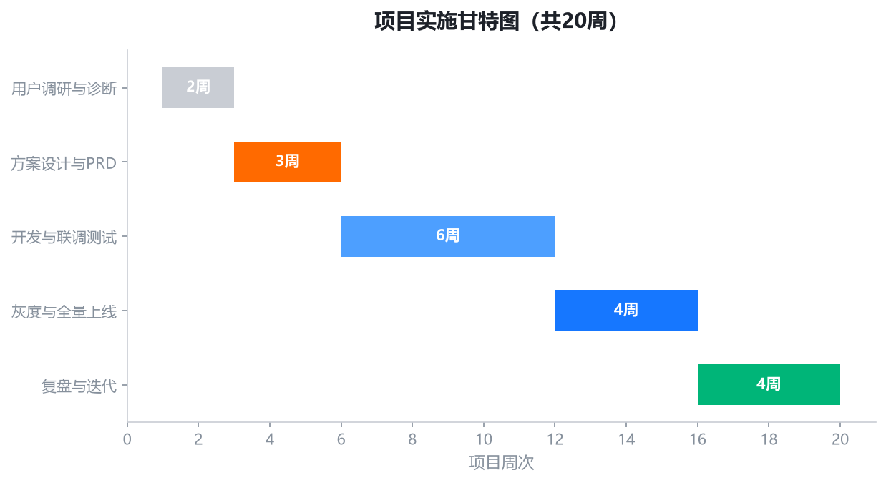

支付宝智能客服服务月活9.69亿用户，是C端用户感知平台服务质量的核心触点，也是支付宝"信任"品牌心智的最后一道防线。当前体验存在四大结构性问题：转人工入口隐蔽且路径长（3-4步/2-3分钟）、机器人应答在支付×账户×理财×信贷交叉场景下答非所问、资金/账户类高焦虑问题缺乏专属SOP与进度透明、处理结果无回访无闭环。2026年9月1日起实施的GB/T 47746—2026新国标对"转人工入口清晰、信息同步、企业担责"提出强制要求，优化已从"体验提升"变为"合规刚需+品牌护城河"。
本方案以产品+运营双轮驱动为核心思路：产品侧落地"场景化意图预判+人机协同安全感+资金问题专属SOP+适老化无障碍"四大优化点；运营侧构建"知识库内容运营+用户分层触达+体验提升活动+数据监控看板"全链路运营体系。目标自助解决率65%→80%、FCR 55%→75%、CSAT 70→85，预计年降本增效超3000万元（演示测算）。
客服不是成本中心，而是支付宝"信任"心智的护城河。从业务全景看客服的战略定位。
支付宝已从"支付工具"演进为"数字生活开放平台"，业务线覆盖支付转账、余额宝/理财、花呗/借呗/信贷、商家服务、生活缴费等。每条业务线都有独立的客服场景和诉求，客服体验直接影响用户对"钱放在支付宝安不安全"的核心信任判断。


我国首个聚焦人工与智能客服协同机制的国家标准，明确要求：转人工入口须清晰醒目、切换后信息须同步无需重讲、企业须对AI客服答复承担责任，不得以"AI回答不代表公司立场"免责。21世纪经济报道2026年9月实测13款App，仅淘宝/淘宝闪购有明确人工按钮。支付宝作为头部平台，优化已从"提升NPS的可选动作"变为"满足合规的必做动作"。
减少时间成本与情绪损耗，资金问题快速透明解决，重建"钱在支付宝安全"的信任
提升自助解决率降低人工成本，减少因客服体验差导致的用户流失和资金转出
满足新国标要求，规避监管处罚与舆论风险，做行业合规标杆
在全行业AI客服"答非所问、找不到人工"的痛点中，做出"清晰、透明、有温度"的差异化
五类核心用户画像、七步旅程痛点、VOC按业务线深度拆解、用户分层运营矩阵。
年轻理财用户（32%）：关注收益、赎回、手续费问题，对专业术语有一定理解但仍需通俗解释，痛点是理财客服与支付客服割裂，需多次转接。
日常支付用户（28%）：问题集中在转账失败、支付限额、退款进度，痛点是支付失败后资金状态不透明，不知道钱去了哪里。
信贷用户（18%）：高焦虑群体，关注额度、还款、逾期、征信，痛点是客服话术模板化，无法根据个人情况给出具体方案。
商家/个体户（14%）：关注收款、对账、提现、费率，痛点是商家客服入口深，问题处理周期长。
老年用户（8%）：使用基础支付功能，痛点是字小、入口深、语音菜单听不懂，需要子女协助。

用户从"发现问题"到"问题解决"共经历7个阶段：发现问题→寻找入口→AI应答→请求人工→等待接入→描述问题→处理跟进。每个阶段都存在不同程度的痛点，其中"寻找入口"和"请求人工"是流失最严重的两个环节。

以"问题严重度"×"用户价值"双维度分层，不同层级匹配差异化运营策略。
四大结构性问题 + 根因分析 + 按业务线痛点拆解 + 客服全链路转化漏斗。
客服入口位于"首页→全部→便民生活→我的客服"，需3-4步操作。热线95188语音菜单需多次按键。老年用户和紧急场景用户"还没开始解决问题就已经放弃"。
大模型意图识别准确率行业均值92.4%，但在支付宝支付×账户×理财×信贷交叉场景下，用户问题涉及多业务线，容易出现"理解偏差→模板应答→重复描述→仍无法解决"的恶性循环。
人工入口不直接展示，需反复输入"转人工"触发；转接后对话上下文未同步，用户需向人工重新描述问题。21世纪经济报道实测13款App，仅淘宝和淘宝闪购有明确人工按钮。
大量投诉指向"提交后提示1-3个工作日反馈，但实际无人跟进""承诺回电但未回""处理结果含糊需反复追问"。资金/账户类高焦虑问题缺乏进度可视化和主动回访。
入口层流失（~30%）：用户找不到客服入口，放弃求助或转向社交媒体投诉。
AI应答层流失（~25%）：机器人答非所问，用户反复描述后仍无法解决，情绪升级。
转人工层流失（~35%）：找不到人工入口或排队超时，用户放弃或拨打热线。
处理层流失（~20%）：进度不透明、承诺不兑现，用户重复来电或升级投诉。
四大问题的本质是：智能客服被设计成了"替代人工的成本工具"，而非"服务用户的体验产品"。KPI导向"降转人工率"而非"提解决率"，导致产品设计处处设卡。优化方向不是让机器人更能说，而是让整个客服链路变得清晰、透明、可控、有温度，同时将KPI从"转人工率"转向"一次解决率"和"用户满意度"。
综合21世纪经济报道、红星资本局、新浪科技等多家媒体2026年8-9月公开实测，六维度雷达对比。

合规先行：率先全面满足新国标，做行业客服体验标杆
场景差异化：支付/资金/账户场景是支付宝独有的高价值高焦虑场景
AI能力底座：支小宝大模型可从"应答"升级为"预判+识别+主动服务"
适老化领先：已有长辈版基础，客服适老化可做行业标杆
| 平台 | 转人工体验 | 差异化亮点 | 支付宝可借鉴 |
|---|---|---|---|
| 淘宝/闪购 | 客服页有明确"人工服务"按钮，约30秒 | 入口直接、无需关键词触发，新国标标杆 | 客服首页设置常驻人工入口，一步触达 |
| 飞猪/去哪儿 | 简单对话后主动出现"人工对话"入口 | 系统判断机器人无法解决时主动推荐人工 | 基于对话轮次/意图置信度主动推荐人工 |
| 抖音 | 输入4次"人工客服"+描述问题后接通 | 新增电话客服功能，部分场景支持预约回电 | 高焦虑场景支持预约回电，减少在线等待 |
| 阿里店小蜜 | 转人工率下降45% | AI+人协同转化效果首次超越纯人工（+10%） | AI初筛+人工做复杂问题的协同模式 |
| 招商银行 | 约8分钟，需反复说"转人工" | 反例：层级过深导致用户流失和舆情 | 避免多层语音菜单和关键词触发，引以为戒 |
竞品对比显示，淘宝的"常驻人工按钮"和飞猪的"主动推荐人工"是最值得借鉴的两个设计。支付宝当前处于中游偏下（约2-3分钟、3-4步），若能做到"一步触达人工+上下文自动同步"，即可在头部平台中建立客服体验的差异化优势。而资金问题专属SOP是支付宝独有的、其他平台不具备的高价值场景——这是支付宝客服体验超越竞品的核心突破口。
以影响面和严重度双维度排序，P0先做合规刚需，P1做体验升级，P2做智能闭环。

| 优先级 | 需求项 | 价值说明 |
|---|---|---|
| P0 | 客服首页常驻"转人工"入口 | 满足新国标，一步触达，消除最大痛点 |
| P0 | 人机对话上下文同步 | 转接后无需重讲，提升效率与体验 |
| P0 | 资金问题专属SOP与进度可视 | 高焦虑场景专属流程，进度透明 |
| P1 | 场景化意图预判 | 基于上下文预判问题，提升首答准确率 |
| P1 | 高焦虑场景预约回电 | 减少在线等待，承诺回电并履约 |
| P1 | 适老化/无障碍客服模式 | 大字体、语音、一键人工、子女协助 |
| P2 | 处理结果主动回访 | 形成服务闭环，提升CSAT与NPS |
| P2 | 客服入口前置 | 首页/我的页快捷入口，减少操作步骤 |
| 版本 | 时间 | 核心交付 | 目标 |
|---|---|---|---|
| V1.0 合规版 | 第1-6周 | 常驻人工入口、上下文同步、资金问题进度可视、知识库基础治理 | 满足新国标，消除P0痛点 |
| V1.5 体验版 | 第7-12周 | 场景化意图预判、预约回电、适老化模式、用户分层运营 | 自助解决率≥72%，FCR≥65% |
| V2.0 智能版 | 第13-20周 | 主动回访闭环、AI风险识别、全链路数据看板、运营自动化 | CSAT达85+，从被动到主动 |
四大设计原则 + 四大核心优化点 + 业务线专属方案 + 优化前后对比。
入口可见、路径可寻、状态可知
进度可视、承诺可溯、结果可确
AI初筛、人工共情、信息无缝
高焦虑有人情味、老年有适老
基于用户当前页面、近期操作、历史工单预判问题，首屏直接给出解决方案。
常驻人工入口，一键转接，上下文自动同步，无需重复描述。
资金/账户类高焦虑问题专属流程，进度可视化，主动推送更新。
大字体、语音交互、一键人工、子女远程协助，覆盖老年用户需求。
支付失败后自动弹出"资金状态卡片"，显示扣款状态、退款进度、预计到账时间；转账失败提供"重新转账"和"联系人工"双按钮；大额转账触发风控时主动解释原因并提供申诉入口。
账户受限专属通道，提交申诉后生成"工单进度卡"，实时显示审核状态、预计完成时间、处理人；资金冻结显示冻结原因和解冻路径；SLA超时自动升级至专员处理。
理财页内嵌"收益/赎回助手"，基于持仓预判问题；信贷还款日前3天主动推送还款提醒；逾期用户提供"个性化还款方案"，避免模板化应答；征信异议专属处理流程。
长辈版自动启用大字体客服界面；支持语音输入和语音播报；首页常驻"一键人工"大按钮；提供"子女协助"功能，可将客服对话分享给子女远程协助。
产品解决"有没有"，运营解决"好不好"。四大运营模块构建客服体验持续优化闭环。
知识库体系建设与治理
分层触达与满意度管理
体验提升活动与激励
监控看板与指标体系
当前知识库按业务线割裂维护，存在重复、矛盾、过时等问题。需构建统一的"客服知识中台"，按业务线×场景×用户类型三维组织。
建立"周更新+月审计"机制：每周由各业务线运营更新新增问题，每月由知识运营团队审计过时/矛盾内容，AI应答命中率低于60%的知识点自动标记为"待优化"。目标知识库覆盖率从当前约70%提升至90%+，AI应答准确率从约60%提升至80%+。
| 用户层级 | 触达方式 | 运营动作 |
|---|---|---|
| 高价值+高严重度 | 专属客服+电话 | 1v1跟进、进度主动推送、24小时内回访、权益补偿 |
| 高价值+低严重度 | App推送+短信 | 主动服务提醒、满意度调研、专属权益 |
| 低价值+高严重度 | App内消息 | 标准SOP处理、进度可视、超时自动升级 |
| 低价值+低严重度 | AI自助 | 知识库引导、FAQ推荐、完全自动化处理 |
① 即时评价：每次会话结束后弹出CSAT评价（1-5分），低分自动触发工单
② 低分回访：CSAT≤2分的用户，48小时内由专人电话回访
③ 根因分析：每周汇总低分原因，输出《客服体验周报》
④ 产品迭代：Top3低分问题进入下周产品需求池
⑤ 效果追踪：追踪问题修复后CSAT变化，形成闭环
招募1000名活跃用户担任体验官，优先体验新功能、提供反馈，给予蚂蚁积分/会员权益激励。每月输出体验官报告。
邀请用户尝试用各种方式"问倒"AI客服，收集bad case，命中未覆盖问题的用户获得奖励。持续扩充知识库边界。
联合社区开展老年用户客服体验活动，现场教学+收集反馈，提升适老化模式的真实可用性，同时履行社会责任。
| 层级 | 指标 | 现状（演示） | V2.0目标 |
|---|---|---|---|
| 效率层 | 自助解决率 | 65% | 80% |
| 平均处理时长 | 基准 | 降低35% | |
| 人工坐席利用率 | 基准 | 提升20% | |
| 质量层 | 一次解决率(FCR) | 55% | 75% |
| CSAT满意度 | 70分 | 85分 | |
| 重复来电率 | 基准 | 降低40% | |
| 体验层 | 转人工顺畅度 | 45分 | 85分 |
| NPS净推荐值 | 基准 | +20 |
三个P0核心功能的完整产品需求文档，含需求背景、功能描述、交互逻辑、验收标准。
| 需求背景 | 新国标要求转人工入口清晰醒目；当前入口需3-4步，用户流失严重；竞品淘宝已有常驻人工按钮。 |
| 功能描述 | 客服首页顶部常驻"转人工"按钮，一键接入人工排队；AI对话3轮未解决时主动弹出"推荐人工"卡片；高焦虑场景（资金/账户）首屏直接展示人工入口。 |
| 交互逻辑 | 点击人工按钮→展示排队人数和预计等待时间→支持"预约回电"替代在线等待→接入后自动同步AI对话上下文。 |
| 验收标准 | 客服首页人工按钮可见率100%；点击到进入排队≤1秒；人工转接成功率≥98%；用户无需重复描述问题。 |
| 需求背景 | 新国标要求切换人工后信息同步无需重讲；当前用户转接后需重复描述，体验差且效率低。 |
| 功能描述 | AI对话记录自动同步给人工坐席，包括用户问题、AI应答、已执行操作、用户情绪标签；人工坐席可一键查看完整对话历史。 |
| 交互逻辑 | 转接触发→系统自动打包对话上下文→人工坐席工作台展示"对话摘要+完整记录"→坐席可直接基于上下文继续服务。 |
| 验收标准 | 上下文同步成功率≥99%；同步延迟≤2秒；用户重复描述率降低80%；敏感信息自动脱敏。 |
| 需求背景 | 资金/账户类问题是用户最高焦虑场景；当前处理进度不透明，用户反复催问，投诉率高。 |
| 功能描述 | 资金问题提交后生成"工单进度卡"，实时显示处理状态（待审核/处理中/已完成）、预计完成时间、处理人；关键节点主动推送通知；SLA超时自动升级。 |
| 交互逻辑 | 识别资金问题→自动创建专属工单→用户可在"我的客服"查看进度卡→状态变更时App推送+短信通知→超时自动升级至专员。 |
| 验收标准 | 资金问题工单生成率100%；进度更新及时率≥95%；SLA超时自动升级率100%；资金问题投诉率降低50%。 |
六大核心指标 + 五阶段灰度 + ROI测算 + 六项风险预案。

输入参数：
• 日均客服会话量：50万次
• 人工单次处理成本：6元
• 自助解决率提升：8个百分点
• 项目年投入：5000万元
测算结果：
• 年节省人工成本：8760万元
• 年净收益：3760万元
• 投资回报率ROI：75.2%
测算逻辑：年节省 = 日均会话量×自助率提升×人工成本×365天。未计入用户留存提升、品牌价值等隐性收益。
| 阶段 | 灰度范围 | 验证内容 | 通过标准 |
|---|---|---|---|
| 内部灰度 | 员工+内测用户（约1万） | P0功能可用性、流程完整性 | 无P0/P1 bug，核心流程通过率≥95% |
| 小流量灰度 | 1%用户（约100万） | 常驻人工入口、上下文同步、进度可视 | CSAT不下降，人工转接成功率≥98% |
| 中流量灰度 | 10%用户（约1000万） | 全部V1.0功能+核心指标 | 自助解决率≥70%，FCR≥60%，CSAT≥75 |
| 全量上线 | 100%用户 | V1.0全量 | 指标达标且无重大舆情 |
| V1.5灰度 | 5%→20%→50%→100% | 意图预判、预约回电、适老化 | 首答准确率≥80%，回电履约率≥95% |
| 风险 | 等级 | 应对措施 |
|---|---|---|
| 人工入口开放后人流量激增，承接不足 | 高 | 分批灰度+智能分流+预约回电+弹性排班；AI初筛过滤简单问题；设置人工排队上限，超阈值自动推荐预约回电 |
| 上下文同步涉及用户隐私合规 | 高 | 同步内容仅限客服所需，敏感信息脱敏，通过隐私评审与合规审查；用户可在设置中关闭 |
| 意图预判不准导致推荐错误 | 中 | 低置信度不展示；用户可一键反馈"不是我的问题"；bad case 48小时内修复；持续迭代模型 |
| 资金问题专属通道被滥用 | 中 | 严格识别规则+人工复核+异常行为监控；非资金问题不进入；设置通道使用频次限制 |
| 灰度期间指标波动 | 中 | 设置熔断阈值，核心指标下降超5%立即暂停并回滚；每日监控数据看板 |
| 适老化模式开发资源不足 | 低 | 优先复用长辈版组件，MVP先做大字体+一键人工+语音，后续迭代 |
20周完整实施周期，含甘特图、里程碑、RACI责任矩阵、资源需求。

| 时间 | 里程碑 | 交付物 |
|---|---|---|
| 第2周末 | 用户研究与诊断完成 | 用户画像、旅程地图、VOC报告、优先级矩阵 |
| 第6周末 | V1.0方案设计完成 | PRD文档、交互原型、视觉设计、技术方案 |
| 第12周末 | V1.0开发测试完成 | 可测试版本、测试用例、灰度方案 |
| 第14周末 | V1.0全量上线 | 全量发布、数据监控看板、运营SOP |
| 第18周末 | V1.5体验版上线 | 意图预判、预约回电、适老化模式 |
| 第20周末 | 项目复盘与V2.0规划 | 全案复盘报告、V2.0需求池、迭代路线图 |
| 工作项 | 负责(R) | 审批(A) | 协同(C/I) |
|---|---|---|---|
| 用户研究与体验诊断 | 产品经理(用户型) | 产品总监 | 用研、数据、客服运营 |
| PRD与交互设计 | 产品经理(用户型) | 产品总监 | 交互设计、视觉设计 |
| 技术方案与开发 | 技术负责人 | 研发总监 | 前端、后端、算法、测试 |
| AI意图预判模型 | 算法负责人 | 技术总监 | 产品经理、数据团队 |
| 灰度与数据监控 | 产品经理 | 产品总监 | 数据、QA、客服运营 |
| 客服运营SOP与培训 | 客服运营负责人 | 服务总监 | 产品经理、培训团队 |
| 合规与隐私评审 | 法务/合规 | 合规负责人 | 产品经理、安全团队 |
| 角色 | 人数 | 投入周期 | 主要职责 |
|---|---|---|---|
| 产品经理(用户型) | 1 | 全程20周 | 需求定义、PRD、跨团队协同、灰度验证 |
| 产品运营经理 | 1 | 全程20周 | 知识库治理、用户分层、活动运营、数据看板 |
| 交互设计师 | 1 | 第3-8周 | 交互原型、用户旅程、可用性测试 |
| 视觉设计师 | 1 | 第4-10周 | 视觉设计、适老化模式设计 |
| 前端工程师 | 2 | 第5-14周 | 客服端页面、人工入口、进度可视化 |
| 后端工程师 | 2 | 第5-14周 | 上下文同步、工单系统、进度追踪 |
| 算法工程师 | 1 | 第6-16周 | 意图预判模型、情绪识别 |
| 测试工程师 | 2 | 第8-14周 | 功能测试、兼容性测试、灰度验证 |
| 数据分析师 | 1 | 全程 | 指标体系、AB测试、数据看板 |